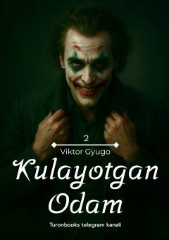

KOKulayotgan odam romanining ikkinchi qismida qahramonlar taqdiri davom etadi.
Bu kitob 'Kulayotgan odam' romanining ikkinchi qismi bo'lib, Josiana va Dovud kabi asosiy qahramonlarning hayoti va munosabatlarini davom ettiradi. Asar murakkab his-tuyg'ular, sevgi va ziddiyatlar orqali insoniy taqdirlarni tasvirlaydi. Matn o'zbek tilida yozilgan badiiy asardir.